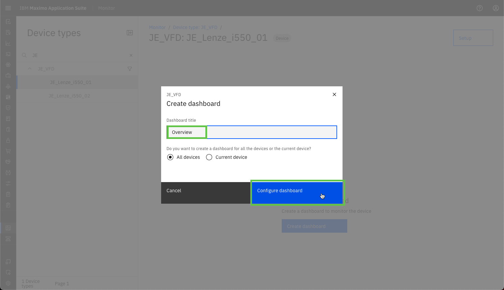
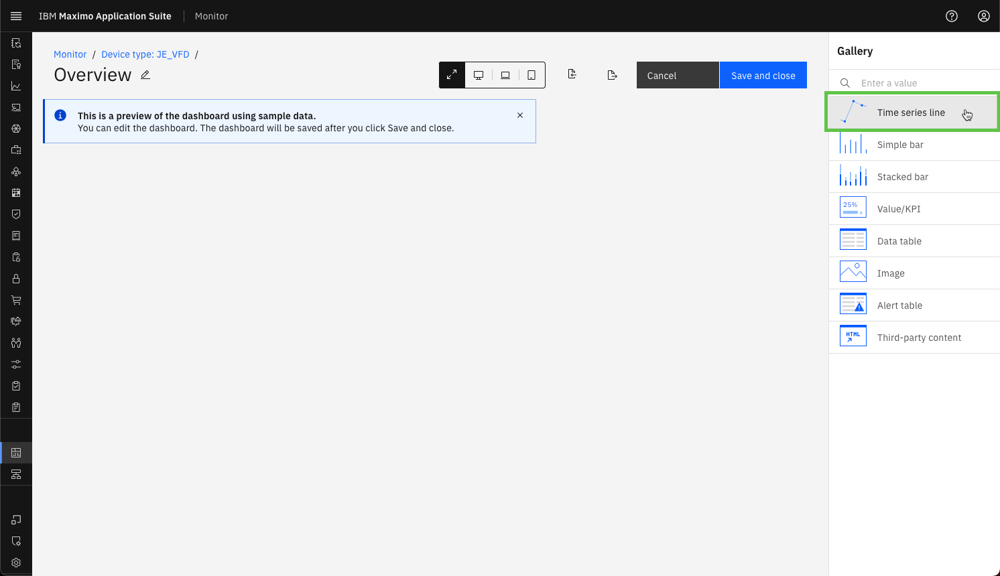
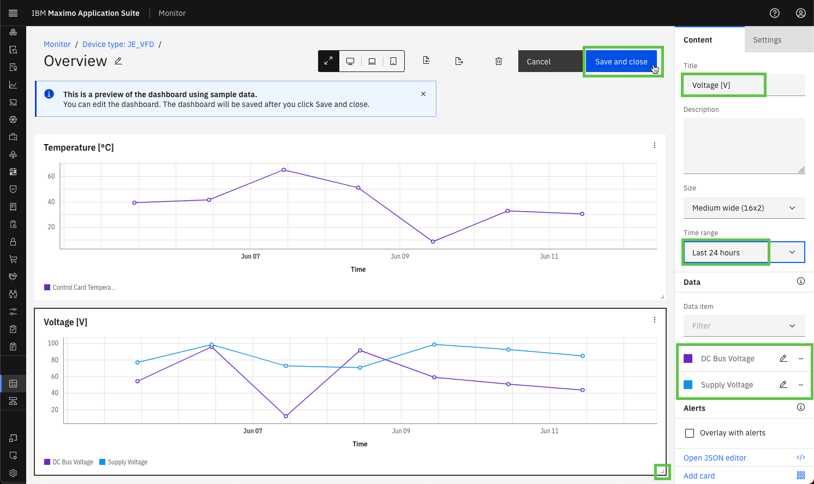
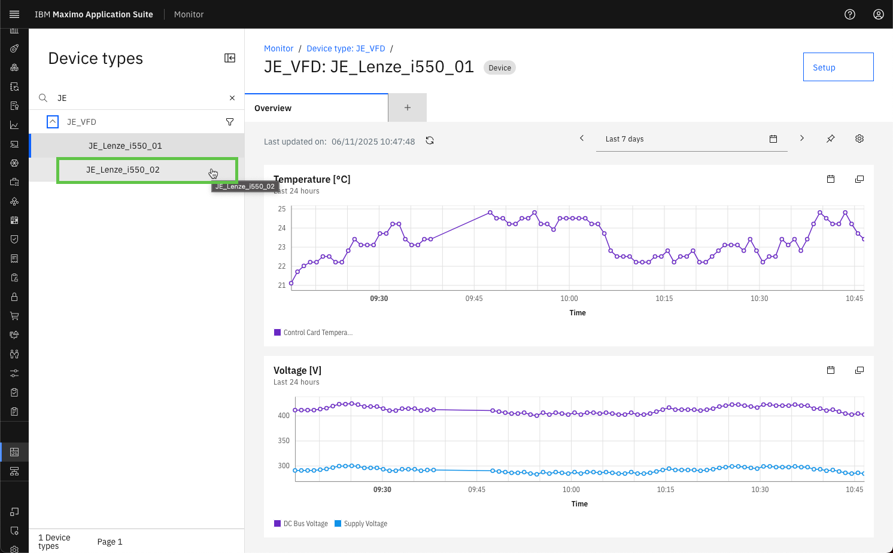

Objectives
In this Exercise you will learn how to:
- Stop and re-deploy the Managed Gateway
- View the incoming data in Monitor dashboards
Before you begin:
This Exercise requires that you have:
- completed the pre-requisites required for All Exercises and for Exercise 4
- completed the previous exercises
- verified the simulator is running as described in exercise 1
Re-Deploy the Managed Gateway
Go to where the current Managed Gateway docker container is running.
Use Ctrl-p & Ctrl-q to get back to the prompt.
Use the docker ps command to view the running docker containers.
Locate the CONTAINER ID of the running Managed Gateway container (look for edgedatacollector) - here it is fd0e37d3ddb5.
Use the docker kill <CONTAINER ID> command to stop the docker container.

Navigate back to your Managed Gateway in Monitor and press the View deployment instructions.
Click on the docker command to copy it to the clipboard:

Get back to the terminal and then paste the docker command line from the clipboard.
Click enter to execute it, and you should see something similar to the following:

Tip
You can see that you successfully have connections to both the simulated Lenze i550 VFD's on ports: 10502 and 20502.
View data in Monitor Dashboards
Navigate to the Device types view in the Monitor Dashboard section:

Filter on your credentials and open to see all your VFD devices.
Select the XX_Lenze_i550_01 device and then click on Create dashboard:

Give your new dashboard a name and press Configure dashboard:

You will now see an empty dashboard configuration. Add a Time series line card by clicking on it: 
Locate the Control Card Temperature in the Data item dropdown and change the Time range to Last 24 hours.
Give the card a title, like Temperature [℃] and drag the lower right corner to resize the card to full width.
Once that is in place, then Add another Time series line card:

Configure the second Time series line card according to the screen shot below and press Save and close:

You have now created a simple dashboard to view some of the data for XX_Lenze_i550_01.
Select the second device:

Note that the dashboard is configured on the Device Type level, hence will also be used for the XX_Lenze_i550_02 device
- but obviously with some other data:

You could now potentially create a dashboard like this 😎:

Tip
The above dashboard is also using an Image card and two additional Value/KPI cards. Please do experiment and have fun 🤗
Congratulations you have successfully re-deployed and viewed data from both VFD's in a Monitor dashboard. This concludes this lab.